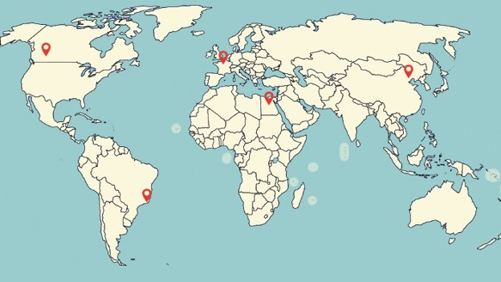

Vacation Destinations
The COVID-19 pandemic has definately taken a tole on everybodies lives, especially by limiting opportunities to spend time outside of our homes.
Currently, it is still very important for us to wear personal protective equipment, practise thorough hand hygiene, etc., in order to help avoid getting sick.
However, I really hope that when the pandemic officially comes to an end, everyone is able to travel abroad and have a nice vacation.
Click on a red pin to learn more about a new travel location!

Bibliography
https://lizardpoint.com/geography/world-countries-quiz.php
https://handluggageonly.co.uk/2016/09/19/12-amazing-sights-you-have-to-see-in-banff-canada/
https://en.climate-data.org/north-america/canada/alberta/banff-9245/
https://handluggageonly.co.uk/2018/01/13/11-unique-things-paris/
https://en.climate-data.org/europe/france/ile-de-france/paris-44/
https://handluggageonly.co.uk/2017/04/14/9-places-need-visit-beijing-china/
https://en.climate-data.org/asia/china/beijing/beijing-134/
https://handluggageonly.co.uk/2019/09/06/photos-and-postcards-from-rio-de-janeiro-brazil/
https://en.climate-data.org/south-america/brazil/rio-de-janeiro/rio-de-janeiro-853/
https://www.kevinandamanda.com/cairo-egypt/
https://en.climate-data.org/africa/egypt/cairo-governorate/cairo-3392/